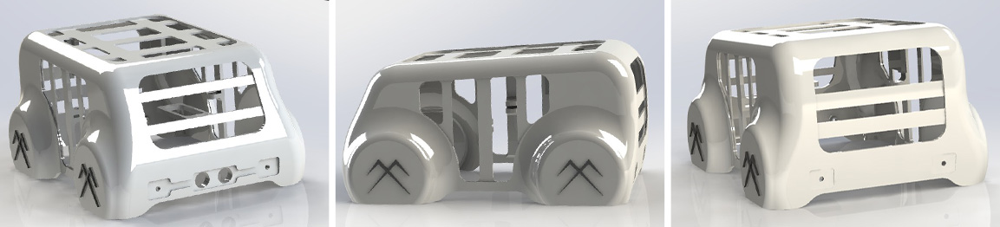
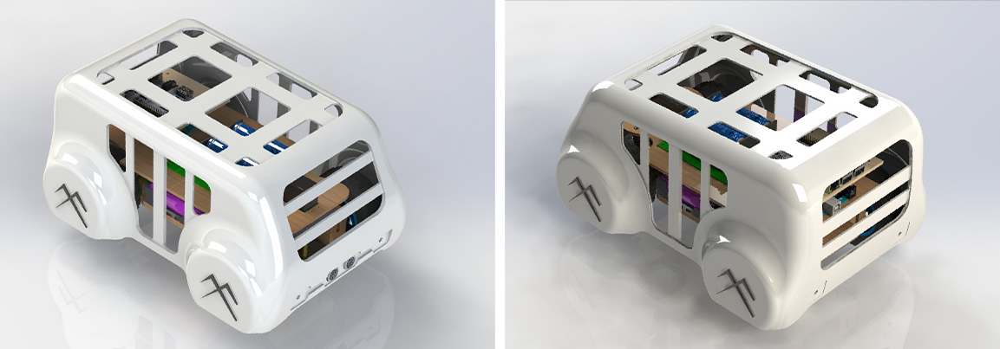
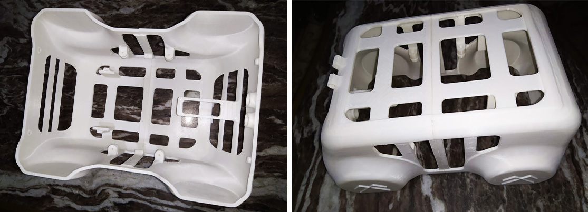
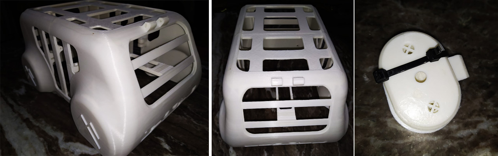

An innovative project that aims to design and develop a car that can move and operate without human intervention.
The vehicle is equipped with advanced sensors and cameras that enable it to detect various objects and obstacles on the road. These sensors are connected to a computer system that uses computer vision to analyze and interpret the information received from the sensors. In addition to detecting objects, the computer vision system is also programmed to detect and interpret traffic signs and lights, allowing the vehicle to navigate through complex intersections and streets safely.
The vehicle is also equipped with a steering system that is controlled by a servo motor. The motor receives input from the computer vision system, which determines the best direction for the vehicle to take based on the detected obstacles and traffic signals. The steering system allows the vehicle to make precise turns and adjustments, ensuring that it stays on the correct path and avoids collisions with other objects or vehicles.
To ensure a smooth ride, the autonomous vehicle is also equipped with a suspension system that uses springs to absorb shocks and bumps on the road. The suspension system helps to maintain the stability and balance of the vehicle, even when driving on rough terrain or uneven surfaces.
The design of this autonomous vehicle is divided into two main parts: the internal body and the external body. The internal body contains all the essential components that make the vehicle function. These include the batteries, microcontrollers, DC motors, suspension mechanism, steering mechanism, and servo motors. These components work together to ensure that the vehicle can move efficiently, respond to commands, and navigate the road safely.
The external body of the vehicle is designed to provide aerodynamics and aesthetic appeal. It is made up of lightweight and durable materials that enhance the vehicle's performance and reduce energy consumption. The external body also has openings for sensors, cameras, and other equipment that allow the vehicle to detect and respond to its environment.
The internal and external body parts of the autonomous vehicle are connected together to form a complete unit. The external body is designed to be aerodynamic, with a sleek and modern design that allows the vehicle to move smoothly through the air, they both work together seamlessly to provide a safe, efficient, and comfortable ride. The use of advanced technologies such as sensors and computer vision allows the vehicle to detect and respond to its environment.
The internal body of the autonomous vehicle is made from MDF wood that has been cut using a CNC machine. This material was chosen for its durability and stability, as well as its affordability.
The external body of the autonomous vehicle was fabricated using 3D printing technique. This technique involves the use of a 3D printer to create a three-dimensional object by adding successive layers of material. The advantage of using 3D printing for the fabrication of the external body is that it allows for a high degree of precision and accuracy in the final product. The design can be easily modified and updated as needed, and the final product is lightweight and durable.
To capture images of the surrounding environment, a camera is mounted on the top of the autonomous vehicle using a 3D printed part that securely attaches to the car's exterior.
The project involved simulating an autonomous vehicle using Proteus Design Suite, which included adding a microcontroller, motors, a motor driver, and ultrasonic sensors to the schematic design. The microcontroller was programmed to receive input from the ultrasonic sensors and control the motors accordingly, allowing the autonomous vehicle to navigate and avoid obstacles in its path. The simulation in Proteus allowed for testing and validating the functionality of the autonomous vehicle, ensuring its safety and efficiency before implementing it in the real world.